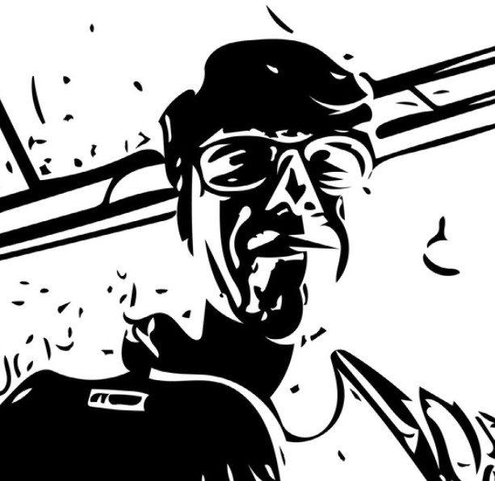

Clase 24 de Septiembre
Clase donde se hizo revisión de bitácoras
Bitácora digital de Franco Castañeda Becerra, estudiante de la Escuela de Arquitectura y Diseño de la PUCV, para el curso de Diseño desde el código, segundo semestre 2021.
